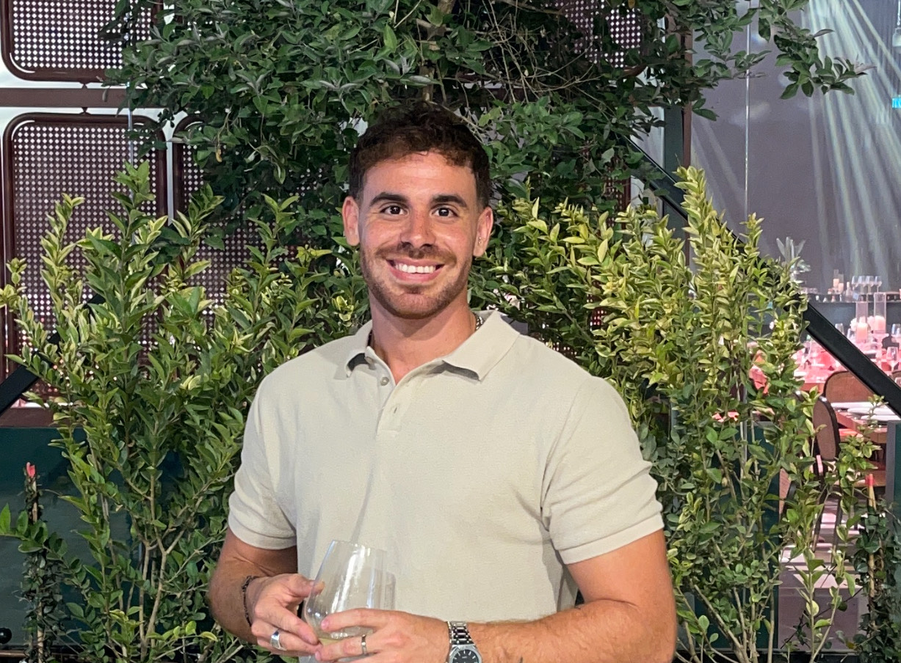

Garage service workflows
GarageTicket
Manage service tickets and operational workflows.
Visit live platform ↗
Software & Intelligent Automation Developer
Building reliable enterprise automation, practical full-stack products and interactive digital experiences. B.Sc. in Computer Science & Mathematics.
Computer Science and Mathematics graduate with experience in enterprise automation, REST API integrations, data transformation and AI-assisted workflows.
I combine algorithmic problem-solving, full-stack development and DevOps practices to create practical, maintainable software products.
Develop UiPath business process automation workflows, integrate REST APIs and JSON, transform Excel and DataTables data, and implement validation, exception handling, retries and AI-assisted information extraction.
Explore live applications directly, with a technical code link for the simulator.
Manage service tickets and operational workflows.
Visit live platform ↗Build and share trips, discover itineraries, find travel partners and manage travel expenses.
App Store ↗Digital wedding websites, personalized invitations, RSVPs and guest management.
Visit live platform ↗Python-based real-time drone simulation using Pygame and network sockets.
View project ↗Explore resort complexes through an interactive three-dimensional property experience and booking website.
Explore virtual tour ↗B.Sc. Computer Science & Mathematics · GPA 84/100
AI, Deep Learning, Search Algorithms, Algorithm Design, Linear Programming, Autonomous Robotics and Economic Algorithms.
JavaScript, HTML, CSS, Node.js and responsive web applications.
Linux, Bash, Docker, AWS, Git, Jenkins and CI/CD.
Platoon Commander: Led combat soldiers, coordinated operations and made decisions under pressure.
Training Detachment Commander: Led a combat training detachment responsible for soldier training, qualifications and operational readiness.
Open to software engineering, intelligent automation and collaboration opportunities.